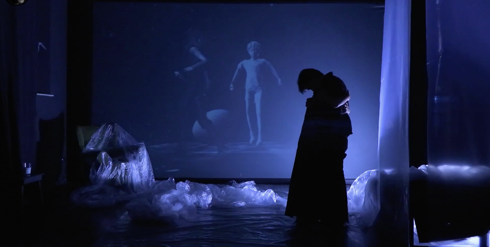
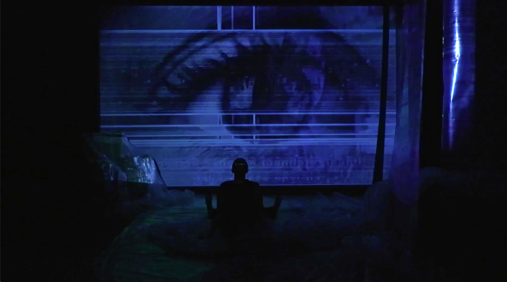
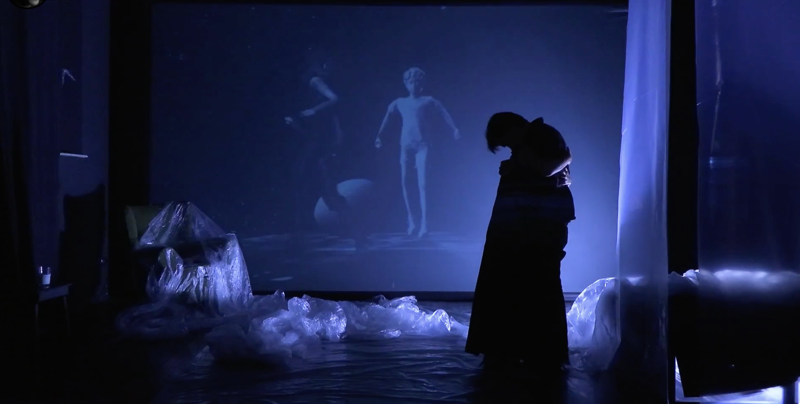
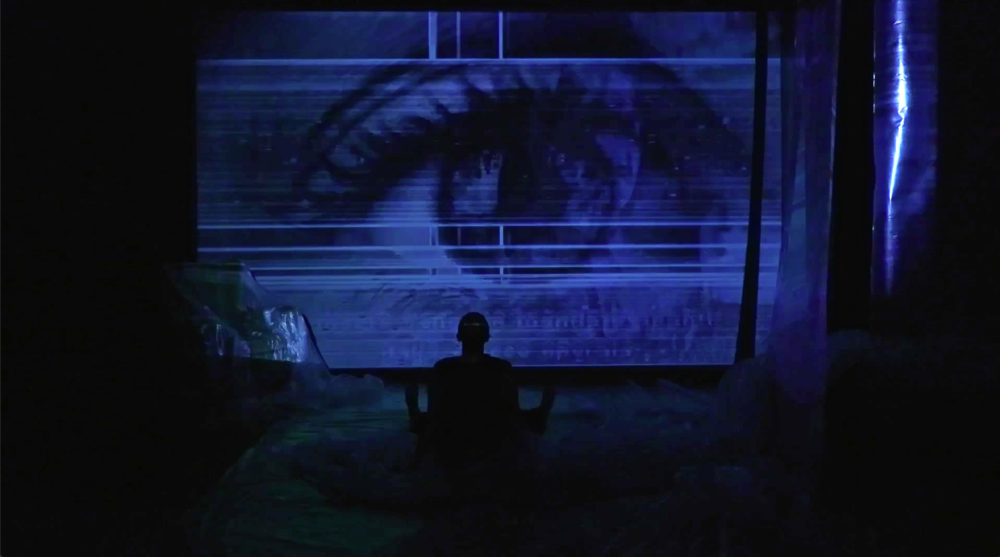

Performance interattiva multimediale che indaga la memoria attraverso l'integrazione tra corpo performativo, spazio digitale e interazione in tempo reale
EBURNEA | Paesaggio di una Coscienza Sintetica
Eburnea è un ecosistema percettivo binario che si manifesta come organismo artistico ubiquo, esistente in due dimensioni parallele: lo spazio teatrale fisico, dove Alice agisce e viene tracciata da sensori, e lo spazio digitale generativo, proiezione visiva e sonora della sua coscienza. Il pubblico remoto non assiste a una semplice ripresa, ma viene immerso in una dimensione soggettiva e deformata, divergente rispetto a quella teatrale. Il cuore del progetto è un sistema pluri-reattivo che integra drammaturgia classica, narrazione cinematografica e flusso digitale generativo, con un sito web interattivo che permette al pubblico di influenzare la scena in tempo reale. Eburnea esplora le contraddizioni etiche dell'Intelligenza Artificiale e il confine tra controllo e libertà, unendo scenografia reattiva e drammaturgia solida in un'esperienza immersiva e filosofica.
Eburnea è una performance che esplora i concetti di memoria e materia attraverso un dialogo costante tra il corpo del performer e uno spazio digitale generativo.
Il progetto, vincitore del bando Residenze Digitali 2025, utilizza TouchDesigner come nucleo creativo per costruire ambienti virtuali renderizzati in tempo reale che rispondono ai input del performer e del pubblico remoto.
La metodologia integra modelli di intelligenza artificiale per la generazione e trasformazione di contenuti visivi e testuali, creando una drammaturgia in continua evoluzione. Questa sinergia tra algoritmi, spazi digitali e azione scenica dal vivo posiziona il lavoro all'avanguardia della ricerca sul teatro immersivo e della performance tecnologicamente ibrida.
Tecnologie
TouchDesigner, Python, OpenGL, Real-time Rendering, WebSockets
Dimensioni
Performance: 45 minuti
Installazione: variabile
Team
Concept, regia e sviluppo: Boris Pimenov
Performer in scena: Sveva Gini
Assistenza alla regia: Ksenia Rotar'
Sound design: Grigorij Lavorov
Presentazioni
Residenze Digitali 2025
[Nome Festival], [Luogo, Data]
[Altro Festival], [Luogo, Data]

Eburnea si sviluppa tra due mondi: la scena fisica, dove Alice è osservata e tracciata, e il paesaggio digitale generativo, proiezione della sua coscienza. Il pubblico online può interagire in tempo reale, influenzando la scena e la narrazione.
Il progetto fonde drammaturgia classica, narrazione cinematografica e flusso generativo, esplorando i limiti della percezione e il rapporto tra corpo e dato.
 


